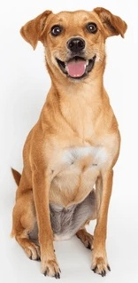

Quem somos
Somos uma organização sem fins lucrativos que atua com animais abandonados.
Missão da ONG Amicão
Promover o bem-estar, a dignidade e a proteção integral dos animais em situação de abandono, garantindo acolhimento, reabilitação e oportunidades de adoção responsável.
“Cuidar, proteger e devolver dignidade aos animais abandonados.”
Fale Conosco
Endereço: Rua Caramelo, 100 - Bairro Vila Doguinhos - São Paulo/SP
Telefone: (11) 99999-9999
Email: contato@amicao.org.br